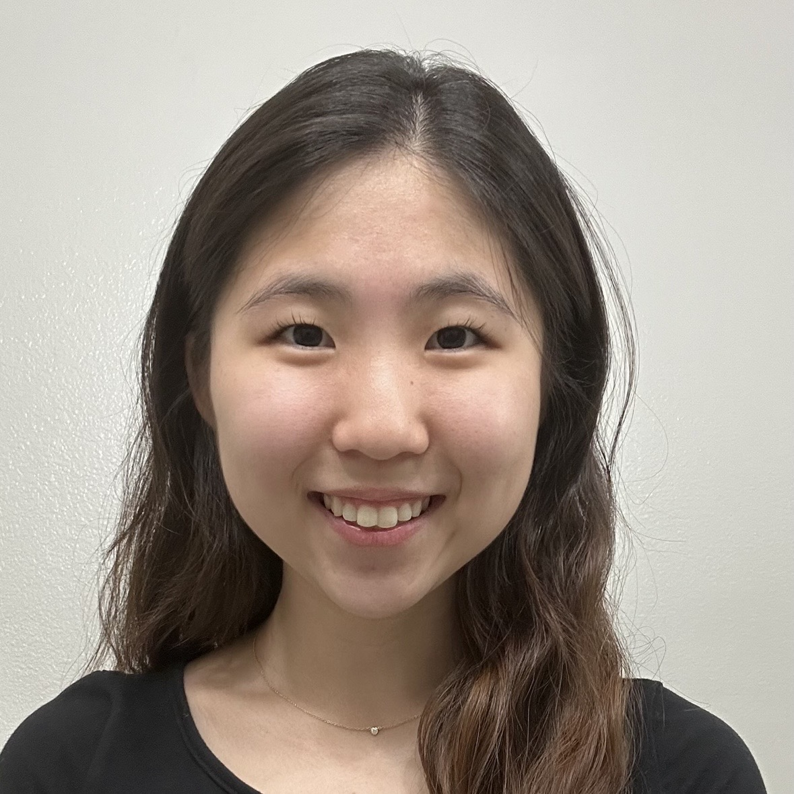
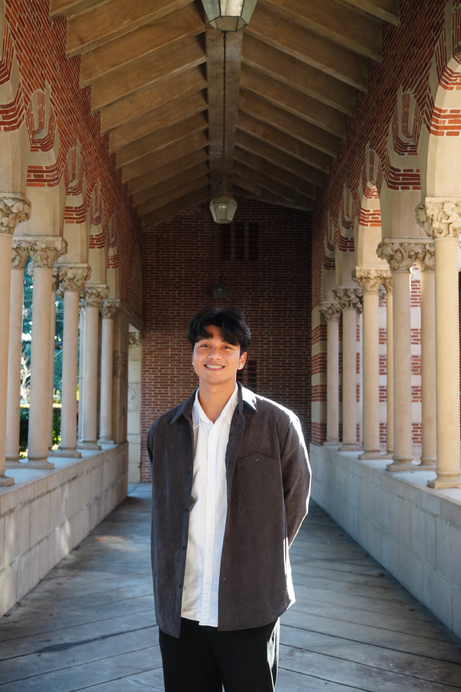
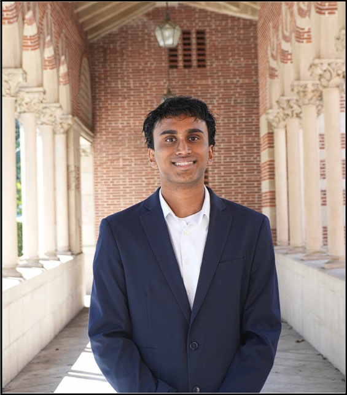
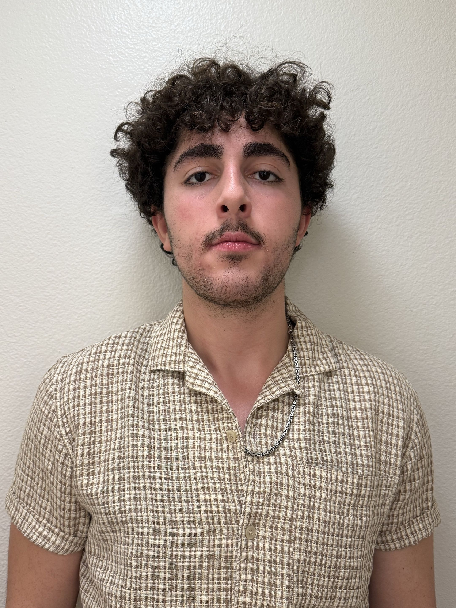
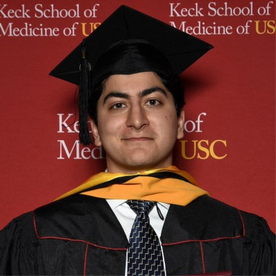
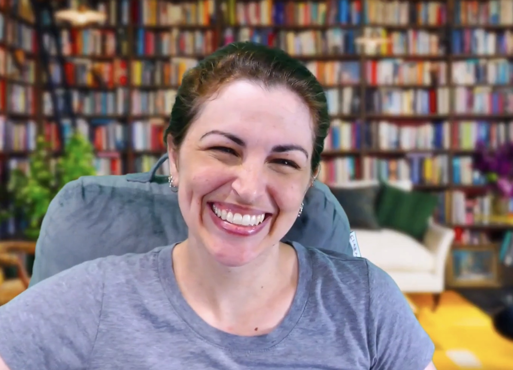
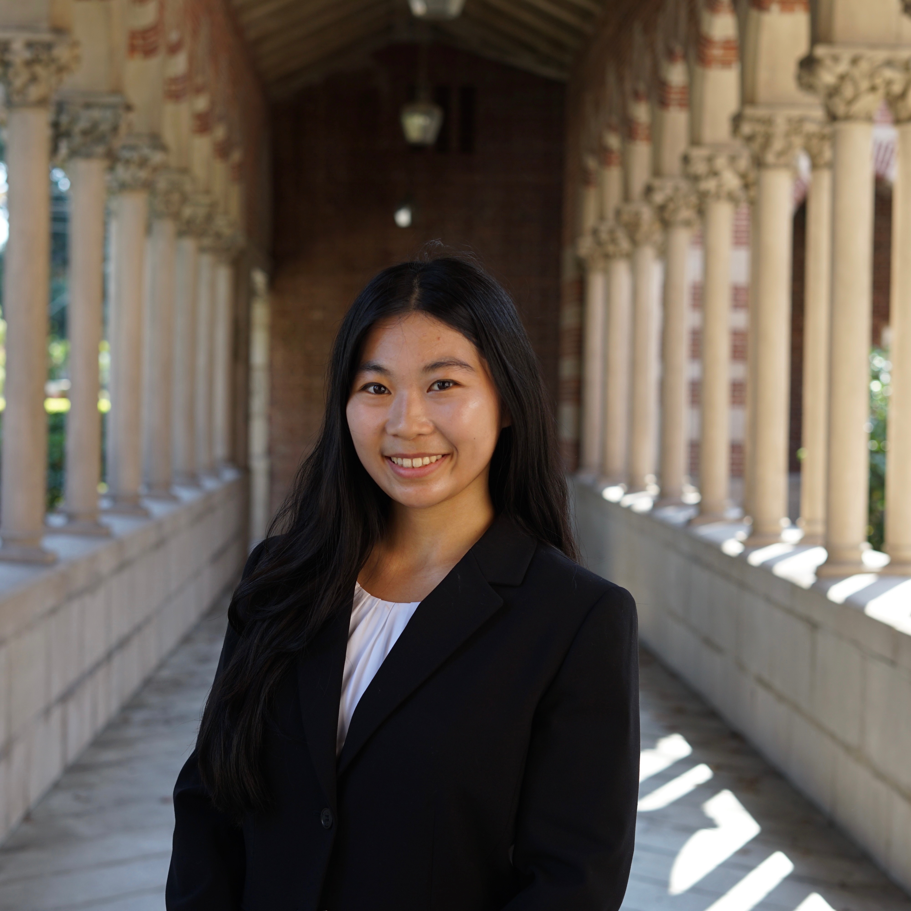

Lab Members
17 July 2026
Principal Investigator
Jonathan Nelson, Ph.D.
Hello, my name is Dr. Jonathan Nelson, and I am an Assistant Professor in the Division of Nephrology & Hypertension at the Keck School of Medicine of USC. I completed my undergraduate studies in Biochemistry at the University of Washington before earning my PhD in Molecular and Medical Genetics at Oregon Health & Science University. My research focuses on vascular biology and the renin-angiotensin system, particularly how it regulates the kidney microvasculature. I am passionate about using translational research to better understand kidney disease and improve outcomes for patients with vascular and renal conditions.
Current Members
Nicky Kim
Laboratory Technician II

Hi! My name is Nicky Kim and I am working in the Division of Nephrology & Hypertension in the Department of Medicine at Keck School of Medicine of USC. I graduated with a Bachelor of Arts in Neuroscience from Reed College in 2023, and I am now currently a research laboratory technician in Dr. Susan Gurley and Dr. Jonathan Nelson’s labs, researching kidney disease through understanding the functions and effects of specific genes, as well as examining roles of outside factors such as PFAS, in transgenic disease mouse models.
Kevin Shih
Laboratory Technician II
Hello, my name is Kevin, and I work in the Division of Nephrology at the Keck School of Medicine at USC in Dr. Nelson’s Laboratory. I received my Bachelor’s of Science in Molecular, Cellular, and Developmental Biology and my Master’s of Science in Physiological Sciences at the University of California, Los Angeles.
Ronald Vaca
Master’s Student
Ronald is working towards graduating with a Master’s of Science in Public Health from the University of Southern California. He is also the manager of the USC Translational Pathology Core and Clinical Immunohistochemistry Laboratories at the Keck School of Medicine. He received his Bachelor of Science in Kinesiology and Exercise Science from California State University, Fullerton.
Arjun Lakshmanan
Undergraduate Student
Jeff Karnsomprot
Undergraduate Student

Deeshan Weeraratne
Undergraduate Student

Hello! My name is Deshan Weeraratne and I am a fourth-year undergraduate at USC majoring in Human Biology and minoring in Healthcare Studies. I joined the Nelson Lab in August 2025, and am currently investigating how angiotensin II affects genetic function in kidney cells.
Paul Cho
Undergraduate Student

Hello, my name is Paul Cho, a third-year undergraduate student at the University of Southern California majoring in Human Biology and minoring in Cinematic Arts! I’ve been a part of Dr. Nelson’s Lab since August 2025. My research focuses on how and to what degree Angiotensin II affects the transcriptional pattern of different kidney cells.
Erik Siranosian
Bridging the Gaps Student

Hello! My name is Erik Siranosian, and I am a 4th-year undergraduate at the University of California, Los Angeles (UCLA), majoring in Psychobiology and minoring in Chicano and Chicana Studies. I am also part of UCLA’s Science Teacher Education Program (STEP), where I’m getting my Master of Education (M.Ed) and will be a secondary science teacher. I conduct research in Dr. Nelson’s lab where I use R to analyze kidney gene expression data to develop a reproducible spatial transcriptomics workflow for identifying kidney cell types while preserving their location within tissue. This work can be used for further kidney research, hopefully improving downstream patient outcomes. In the future, I hope to become a physician-scientist who combines clinical practice, research, and education to improve care for patients from underserved communities.
Omid Sajjadi
Master’s Student

Omid graduated from the University of Southern California with his Master’s of Science in Stem Cell Biology and Regenerative Medicine.
Sam de Leve
Resource Employee

Alumnus Members
Sienna Blanche
Master’s Student
Hello, my name is Sienna Blanche, and I am a Master’s student at the University of Southern California studying Global Medicine. I graduated from the University of Southern California in 2025 with a Bachelor of Science in Human Biology and a minor in Gender and Sexuality Studies. I work as a research assistant in Dr. Nelson’s lab where I analyze kidney gene expression using single-nucleus RNA sequencing. In the future, I aspire to become a physician dedicated to advancing women’s health and global health equity by integrating clinical practice with research to improve patient outcomes.
Sienna has since graduated with a Master’s of Science from the University of Southern California and now works as a Clinical Research Associate as she applies to medical school.
Deborah Sohn
Master’s Student
Deborah graduated with her Master’s in Bioinformatics from the Nelson Laboratory. Congratulations!
Victoria Quon-Chow
Laboratory Technician

Hello! My name is Victoria Quon-Chow, and I am a research technician in Dr. Nelson’s lab. My research work focuses on the associations between per- and polyfluoroalkyl substances (PFAS), diabetes, and renal diseases. I graduated from the University of Southern California in 2024 with a Bachelor of Science in Human Biology and a minor in Nutrition and Health Promotion. I am currently applying to medical school and aspire to serve diverse populations while providing compassionate, patient-centered care.
Victoria was accepted into the Kansas City University College of Osteopathic Medicine and will begin her training in 2026. Congratulations!
Roman Thomas
Bridging the Gaps Student
Hi! My name is Roman Thomas, and I am a fourth-year undergraduate student at Vanderbilt University, double majoring in Biochemistry and Medicine, Health & Society on the premed track. I am currently conducting research in Dr. Jonathan Nelson’s lab, where we are developing a manuscript that provides insights into a standardized method for identifying kidney cell types using single nucleus RNA sequencing analysis in R. I plan to apply these skills in my Neuropharmacology lab, where we investigate the effects of the M5 Muscarinic Acetylcholine Receptor on drug-seeking behaviors in mice. My long-term goal is to become a plastic surgeon while working to address healthcare disparities and ensure that my patients, especially from historically underserved groups, receive the autonomy and care that has often been denied to them in the past.
Roman is graduating from Vanderbilt with his Bachelor’s of Arts in 2026. Congratulations!